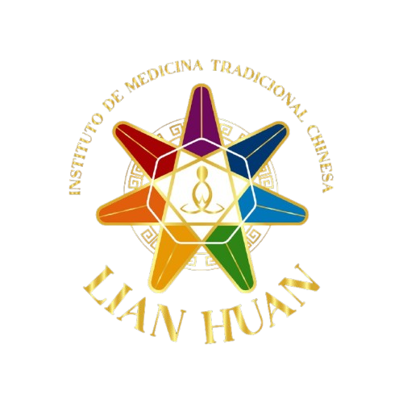
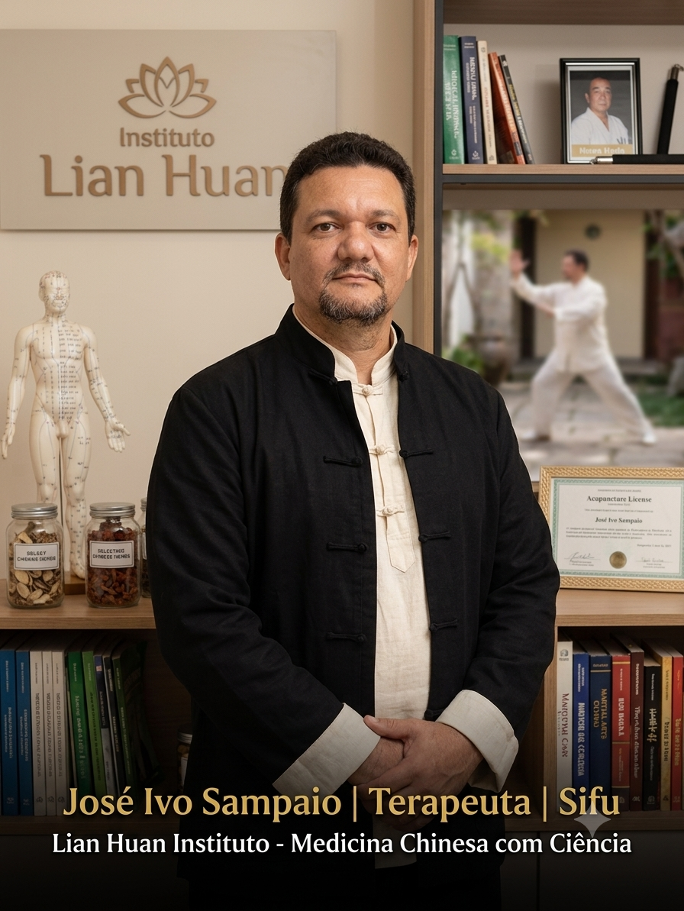

Técnicas milenares da Medicina Tradicional Chinesa com respaldo científico. Transforme sua saúde com a gente.
Quero Agendar Minha Avaliação Ficha de AnamneseO Instituto Lian Huan é um centro de referência em Medicina Tradicional Chinesa, fundado e conduzido por profissionais com ampla formação e experiência.
José Ivo Sampaio, nosso terapeuta principal, é Bacharel e Pós-Graduado em Direito, com mais de 11 anos de serviço no Tribunal de Justiça de Pernambuco. Sua jornada nas artes marciais teve início em 1992, tornando-se faixa preta em Karate Shotokan e Instrutor de Kung Fu Wing Chun. Aprofundou-se na MTC com diplomados em Chi Kung (Qi Gong) pelo Dr. Wong Lo (PhD em Medicina Chinesa) e em Acupuntura pela ABAN, além de formação em Shiatsu.
Esta formação multidisciplinar garante uma abordagem única, que combina o rigor científico e a disciplina das artes marciais com a sabedoria milenar da MTC.

José Ivo Sampaio
Terapeuta | Sifu
No Instituto Lian Huan, cada tratamento é guiado pelas melhores evidências científicas disponíveis, garantindo segurança e eficácia.
Estudos clínicos demonstram sua eficácia para o alívio da dor crônica, enxaqueca e osteoartrite[reference:19]. A Organização Mundial da Saúde (OMS) a reconhece para diversas condições.
Pesquisas mostram que o Tai Chi melhora o equilíbrio em pacientes com Parkinson[reference:20], reduz a dor na osteoartrite[reference:21] e beneficia a reabilitação cardíaca[reference:22].
Priorizamos a segurança. Estudos indicam que 92% das amostras de MTC analisadas apresentam contaminação[reference:23]. Por isso, selecionamos rigorosamente nossas fontes.
Combinamos diferentes técnicas (Acupuntura, Tai Chi, Ventosas) para um tratamento personalizado, potencializando os resultados e promovendo a saúde integral.
“Após anos com dores lombares, a acupuntura no Instituto Lian Huan foi a única abordagem que realmente trouxe alívio duradouro. O cuidado e a atenção do Professor Ivo são incomparáveis.”
“O Tai Chi melhorou significativamente meu equilíbrio e minha qualidade de vida. Me sinto mais forte e confiante. Recomendo a todos que buscam uma abordagem preventiva e holística.”
“O Instituto Lian Huan é mais que uma clínica, é um espaço de transformação. A seriedade e o conhecimento do Professor Ivo me deram segurança para confiar no tratamento e hoje sou uma nova pessoa.”
Preencha o formulário e agende sua avaliação. Sua jornada para o bem-estar começa aqui.